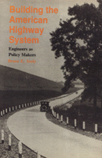

How the Bureau of Public Roads played a central role in the development of the national highway system
How the Bureau of Public Roads played a central role in the development of the national highway system


 How the Bureau of Public Roads played a central role in the development of the national highway system
How the Bureau of Public Roads played a central role in the development of the national highway system

|  |
Building the American Highway SystemEngineers As Policy MakersBruce E. Seelycloth EAN: 978-0-87722-472-3 (ISBN: 0-87722-472-2) |
Abel Wolman Award, Public Works Historical Society, 1988
The Bureau of Public Roads (BPR) has played a central role in the development of public roads and the national highway system in the United States. From an initial concern for farm-to-market roads, to a focus on a federal-aid system of primary and secondary highways, to its final concern for a network of high-speed intercity expressways, federal highway engineers have acted as the arbiters of American highway development. Seely investigates the influence that the BPR established from 1890 through 1956 a probing account of an instance where science prevailed over democracy, essentially because Americans were confident that the engineers could resolve even the most complex problems.
Interesting and well-written, this book examines the highway policy developed over the first half of the twentieth century in a study which traces in detail the growth of public roads through the establishment of the Interstate network. Suggesting that the engineers of the BPR utilized their image of unbiased objectivity to attempt to shape those policies which determined the use of their creations, the book ultimately argues that Americans� faith in technology gradually lessened public discussions of federal expenditures and goals for the highway system.
A work of importance to historians of technology, this study illuminates an intersection between government and politics on the one hand and technological development on the other.
Bruce E. Seely is Assistant Professor of History and Science, Technology and Society at the Michigan Technological University, Houghton, Michigan.
History
Political Science and Public Policy
© 2015 Temple University. All Rights Reserved. This page: http://www.temple.edu/tempress/titles/464_reg.html.